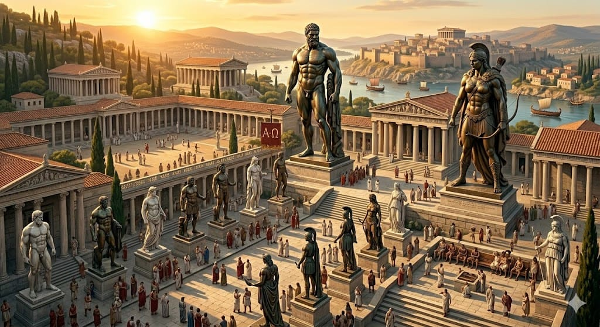

Entrena con intención
Guarda ejercicios para cada día de la semana y vuelve a encontrarlos exactamente donde los dejaste.
 Roman Colosseum
Roman Colosseum
Inspirado en la travesía de Odiseo
Construye una rutina, alimenta tu esfuerzo y mide tu energía en un espacio que protege tu progreso personal.
Un camino claro
Guarda ejercicios para cada día de la semana y vuelve a encontrarlos exactamente donde los dejaste.
Genera una guía de dieta según tu objetivo, tu ritmo y tus preferencias de comida.
Calcula un punto de partida de calorías para tomar decisiones con más claridad.
El círculo de la sabiduría
 (1).png)
Lectura destacada
Principios de hipertrofia, alimentación y descanso para recorrer el camino con inteligencia.